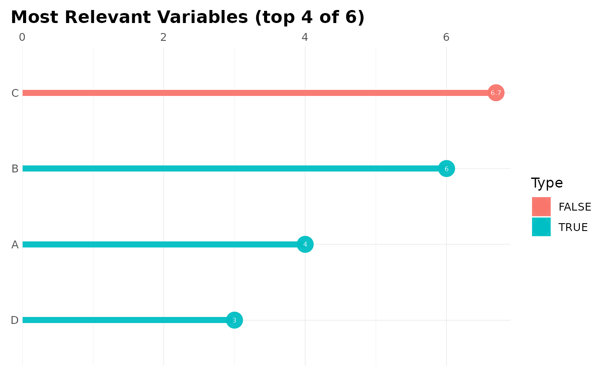
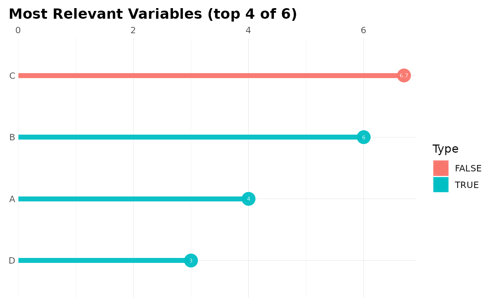

This function plots Variable Importances
Usage
mplot_importance(
var,
imp,
colours = NA,
limit = 15,
model_name = NA,
subtitle = NA,
save = FALSE,
subdir = NA,
file_name = "viz_importance.png"
)Arguments
- var
Vector. Variable or column's names
- imp
Vector. Importance of said variables. Must have same length as var
- colours
If positive and negative contribution is known
- limit
Integer. Limit how many variables you wish to plot
- model_name
Character. Model's name
- subtitle
Character. Subtitle to show in plot
- save
Boolean. Save output plot into working directory
- subdir
Character. Sub directory on which you wish to save the plot
- file_name
Character. File name as you wish to save the plot
See also
Other ML Visualization:
mplot_conf(),
mplot_cuts(),
mplot_cuts_error(),
mplot_density(),
mplot_full(),
mplot_gain(),
mplot_lineal(),
mplot_metrics(),
mplot_response(),
mplot_roc(),
mplot_splits(),
mplot_topcats()
Examples
Sys.unsetenv("LARES_FONT") # Temporal
df <- data.frame(
variable = LETTERS[1:6],
importance = c(4, 6, 6.7, 3, 4.8, 6.2) / 100,
positive = c(TRUE, TRUE, FALSE, TRUE, FALSE, FALSE)
)
head(df)
#> variable importance positive
#> 1 A 0.040 TRUE
#> 2 B 0.060 TRUE
#> 3 C 0.067 FALSE
#> 4 D 0.030 TRUE
#> 5 E 0.048 FALSE
#> 6 F 0.062 FALSE
mplot_importance(
var = df$variable,
imp = df$importance,
model_name = "Random values model"
)
 # Add a colour for categories
mplot_importance(
var = df$variable,
imp = df$importance,
colours = df$positive,
limit = 4
)

# Add a colour for categories
mplot_importance(
var = df$variable,
imp = df$importance,
colours = df$positive,
limit = 4
)
